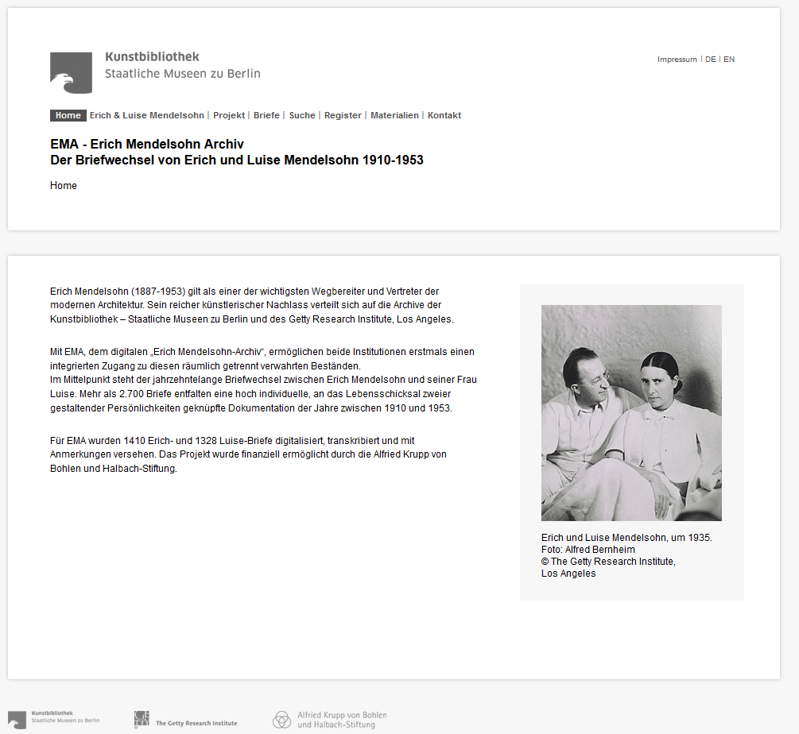
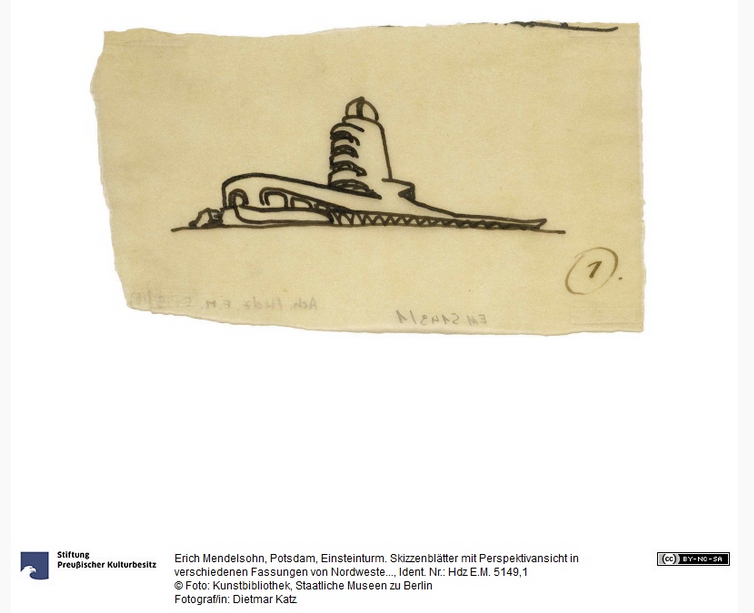
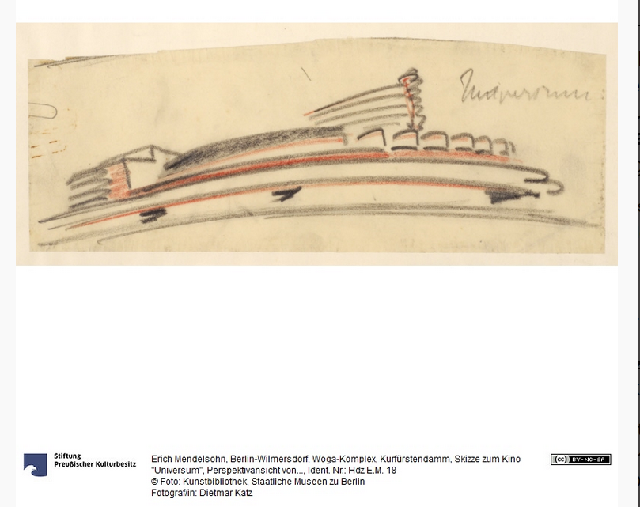
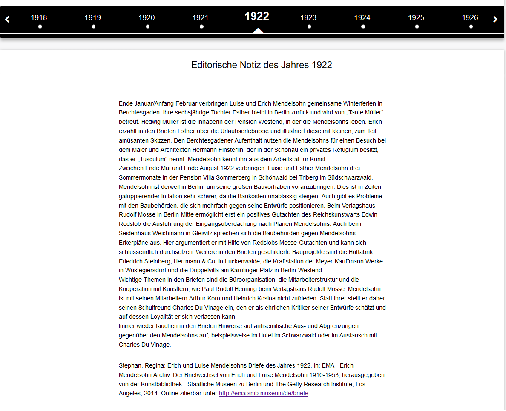
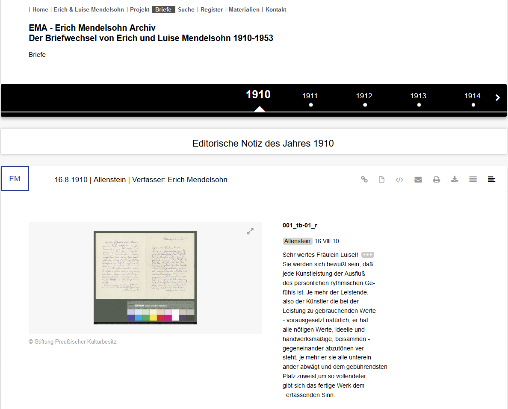
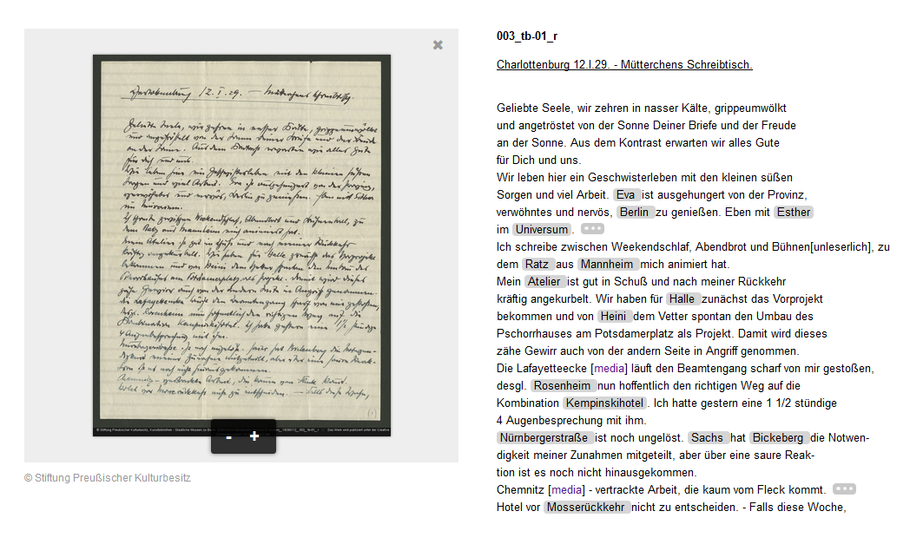
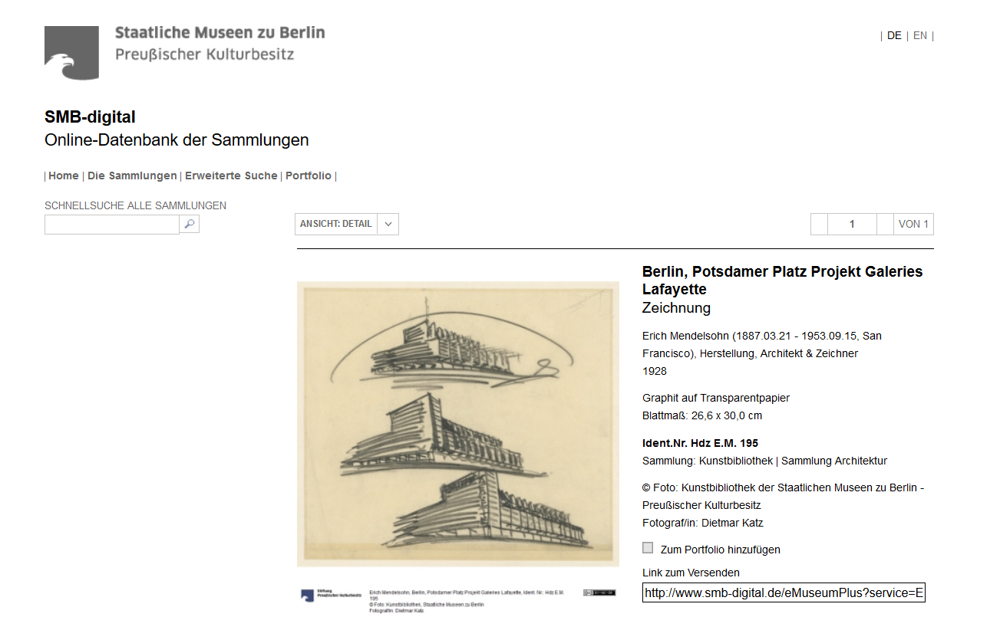
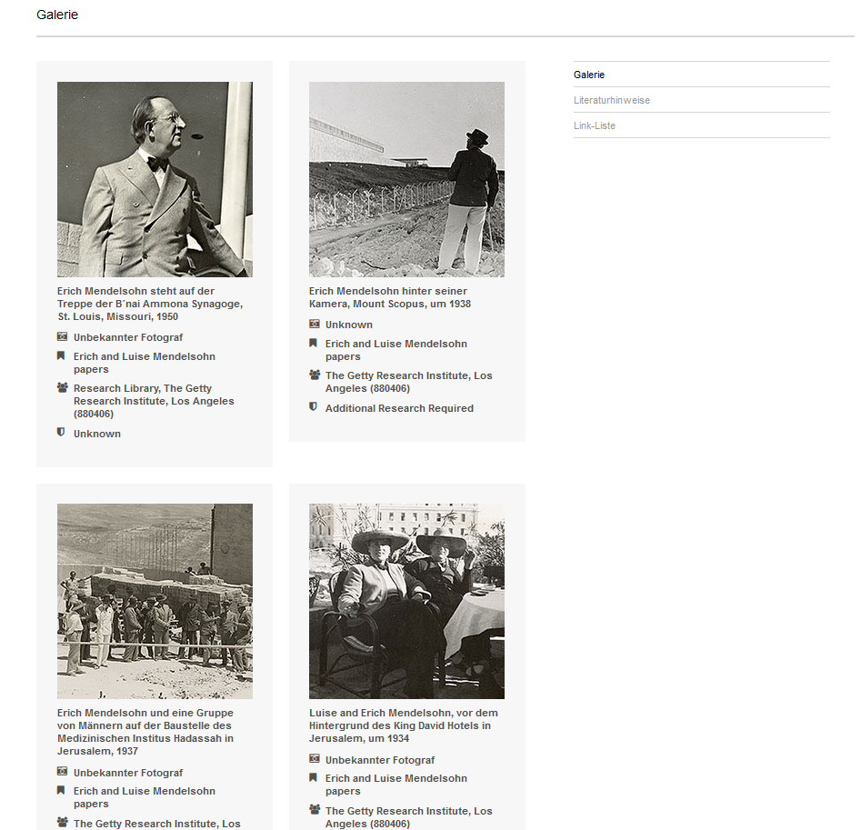
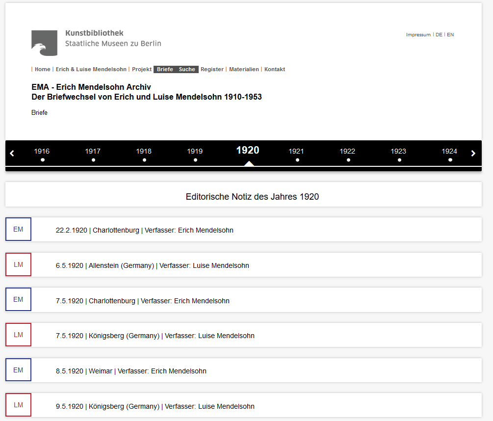
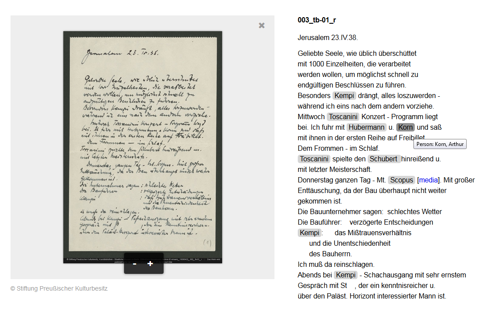

Erich Mendelsohn Archiv (EMA)
Table of Contents
Abstract
The Erich Mendelsohn Archiv (EMA), which sees itself first and foremost as an "online database" and "archive" and only in a second step as a "digital edition", is a cooperative collection development of the correspondence between the architect Erich Mendelsohn and his wife Luise. The estate has been divided for many decades: While the 1410 letters of Erich Mendelsohn together with his sketches have been in the possession of the Kunstbibliothek Berlin since the beginning of 1975, the 1328 letters of his wife, Luise Mendelsohn, have been kept at the Getty Research Institute, Los Angeles, since 1988. The virtual junction in a joint database began in 2011 and was completed in 2014 with financial support from the Alfried Krupp von Bohlen und Halbach Foundation. All letters exchanged between Erich and Luise Mendelsohn were digitized, transcribed, annotated and linked to external sources. Thus, http://ema.smb.museum/de/ is the first edition of the exchange of letters of the spouses, including its historical and architectural classification.
Einleitung

Gegenstand der Edition
Das Erich Mendelsohn Archiv (EMA), das sich selbst in erster Linie als „online-Datenbank“1 und „Archiv“2 begreift und sich erst im zweiten Schritt als „digitale Edition“3 bezeichnet, ist eine kooperative Bestandserschließung des Nachlasses des Architekten Erich Mendelsohn. Der Nachlass, der sich in der Berliner Kunstbibliothek und im Getty Research Institute, Los Angeles, befindet, war über viele Jahrzehnte hinweg geteilt. Während die 1410 Briefe Erich Mendelsohns zusammen mit seinem zeichnerischen Nachlass seit Anfang 1975 im Besitz der Kunstbibliothek Berlin waren, wurden und werden die 1328 Briefe seiner Frau, Luise Mendelsohn, seit 1988 im Getty Research Institute, Los Angeles, aufbewahrt. Die virtuelle Zusammenführung in einer gemeinsamen Datenbank wurde schließlich im Jahr 2011 dank einer „transatlantischen Kooperation“4 begonnen und konnte – durch die Alfried Krupp von Bohlen und Halbach-Stiftung finanziell gefördert und von der Enkelin Erich Mendelsohns, Dariah Joseph, unterstützt – im Jahr 2014 abgeschlossen werden.
Inhalte und Präsentation
 
Die Relevanz der Edition kann aufgrund der architekturgeschichtlichen Dimension, die dem Briefdialog zwischen Erich und Luise Mendelsohn innewohnt, nicht abgestritten werden. Die Bedeutung des Briefeschreibens als Vehikel zur Ordnung von Gedanken und Ideen formuliert die Korrespondenz schließlich gleich selbst: „Aber nicht, daß ich gleich mathematischen Formeln durch logisches Denkvermögen zu einer Lösung kam, sondern in meinen schriftlichen Aufzeichnungen oder Briefen kommen mir die Gedanken und ihre Lösungen, kommen über mich, als ob sie schon lange bei mir waren und durch den augenblicklich angetriebenen rhythmischen Impuls ans Licht gedrängt wurden.“5 So schreibt es Erich Mendelsohn im Dezember 1910 an seine zukünftige Frau Luise. Diese Einblicke in eine so umfangreiche Privatkorrespondenz erlauben von Beginn an den Nachvollzug kreativer Schaffensprozesse und die Rekonstruktion der Entwicklung architektonischer Entwürfe Mendelsohns. Gleichzeitig ist die Korrespondenz exemplarisch zu lesen, als Zeitdokument von Lebensschicksalen in der Zeit von 1910 bis in die 1950er Jahre.
Der erste Eindruck, den der Nutzer von der Startseite des digitalen Erich Mendelsohn Archivs gewinnt, ist der der klar gegliederten Übersichtlichkeit ohne Designspielerei. Dieser Eindruck setzt sich auf den Folgeseiten fort. Die Aufmerksamkeit ist vollständig beim Gegenstand, seiner Erschließung und Präsentation. In wenigen kurzen Sätzen werden das Projekt und die Nachlasssituation skizziert, Eckdaten zu Erich Mendelsohn und seinem Briefwechsel mit seiner Frau Luise, geborene Maas, geliefert und Umfangsangaben gemacht. Über 2700 Briefe sind durch das Projektteam digitalisiert, transkribiert und mit Anmerkungen versehen worden.
Dass ein solch umfangreicher Briefwechsel vorliegt, erklärt sich zum einen aus dem Wunsch, sich unabhängig vom jeweiligen Aufenthaltsort miteinander auszutauschen und der Lust am Schreiben, aber vor allem auch durch die unterschiedlichen Lebensstationen von Luise und Erich Mendelsohn: die Münchener und Berliner Jahre, die Emigration nach England 1933 und Aufenthalte in Israel und in den USA seit 1941 und die zahlreichen unternommenen Reisen.
Der Briefwechsel wird im Jahr 1910 von Erich Mendelsohn aufgenommen und endet 1953 in dessen Todesjahr. Es folgen im Jahre 1955 noch drei Briefe von Luise Mendelssohn an ihre Tochter Esther und die „sweethearts“. Hier vermisst der Nutzer eine editorische Notiz, um die drei Nachzüglerbriefe des Jahres 1955 einordnen zu können. Das gleiche gilt für die zwei Briefe (einer von Erich Mendelsohn und einer von Luise Mendelsohn), die undatiert sind und durch das Editionsteam unverständlicherweise dem Jahr 1970 zugeordnet worden sind.

[…] Wenn sich Menschen zum ersten Mal gesehen und gesprochen haben und fühlen, dass der gegenseitige Eindruck gemeinsam ist, so versuchen sie sich klar zu machen, wodurch die Sympathie hervorgerufen wurde. Und ich glaube, dass wir Menschen die Fähigkeit besitzen müssen, uns auch noch auf eine andere Weise untereinander zu verständigen, als es mit den äusseren Sinnen wahrnehmbar ist, und diese Art Mitteilung erscheint mir entscheidend – Sympathie hervorrufend. Es ist ein glücklicher Zufall, wenn sich solche Menschen treffen, denn es kommt sicherlich oft im Leben vor, dass man jemanden trifft, beobachtet, der ebenfalls Sympathie weckt, und den man an sich vorbei ziehen lassen muss, weil er von dem Leben mitfortgerissen wird. Für den Anderen bleibt nur eine schmerzliche Illusion, die von einem Verlust redet.- Dass Sie mir viel sein können, empfinde ich - Ihr Schreiben bestätigt mir das. ---
Diese Briefstelle eröffnet gleichsam einen über Jahrzehnte hinweg andauernden Dialog zweier Liebender, die sich auf Augenhöhe begegnen und als wichtige Gesprächspartner füreinander fungieren. Dass das durchaus nicht einseitig ist, wenn auch mit unterschiedlichem Handwerkszeug, belegt eine Briefstelle aus dem Jahr 1920 – also zehn Jahre nach dem ersten Kennenlernen — in der Erich an Luise schreibt: „Was bei mir auf komplexer Erkenntnis beruht, wird von Dir gefühlsmäßig erkannt.“7
Wie hellsichtig aber auch Erich Mendelsohn für z.B. zeitpolitische Strömungen ist, lässt sich ebenfalls in den Briefen erkennen. Im Anschluss an die Ernennung Adolf Hitlers zum Reichskanzler und die Vereidigung seines Kabinetts am 30. Januar 1933 schreibt er ahnungsvoll an seine Frau Luise: „Das Animalische der Bewegung wird sein Lebensrecht, sein Blutrecht verlangen - ein Blick in die Gesichter ihrer Vertreter spricht von eindeutiger Grausamkeit. Man kann dem Fanatismus nicht mit Gleichgültigkeit begegnen, der Auserwähltenidee nicht mit Zuvorkommenheit, dem Rassenhaß nicht mit Verachtung. Man schließt uns aus vom Gnadentisch, von der Menschenwürde, von der Menschlichkeit. Also muß man sich freimachen und diesem Kreis den Rücken kehren. Es gibt keine Berührungspunkte und die Gemeinschaft der Sprache, der Kultur und des Erlebens reicht nicht zum Blut, das anders fließt, in der Richtung, in der Zusammensetzung, in der Schwere. Die Auflösung des Reichstages ist nur der Beginn.“8 Die Konsequenz ziehen die Mendelsohns im März 1933. Sie verlassen Deutschland und kehren auch nach Kriegsende nicht wieder zurück.
Tatsächlich handelt es sich bei dem hier erschlossenen Briefmaterial um eine Neuedition. Eine gedruckte Edition sämtlicher zwischen Erich und Luise Mendelsohn getauschten Briefe lag und liegt nicht vor. Allerdings wird die Edition durch bereits geleistete Vorarbeiten unterstützt. Oskar Beyer publizierte 1961 in Zusammenarbeit mit Luise Mendelsohn eine kleine Auswahl von Briefen.9 Ein Gesamtverzeichnis der Zeichnungen und fotografischen Dokumente der Bauten Mendelsohns (Zevi 1970) sowie die Werkübersichten von Whittik (1940) und Stephan (1998) werden explizit als Referenzorgane genannt.
Als Referenzprojekt – auch wenn es im Zusammenhang des EMA nicht explizit genannt wird – muss die digitale Briefedition Vincent Van Gogh – The Letters aus dem Jahr 2010 gelten.10 Diese erste wissenschaftlich fundierte Online-Edition von Künstlerbriefen, die neben dem digitale Faksimile der Originalhandschrift die Transkription und Übersetzungen anzeigt, die die Inhalte umfangreich mit externen Quellen verlinkt und verschiedene Suchfunktionen sowie einen wissenschaftlichen Apparat (u.a. inhaltliche Einführungen, Kommentierung, Konkordanz, Bibliografie) darbietet, gilt als Meilenstein für die Erschließung von Künstlerbriefwechseln. Vor allem die Verknüpfung der Texte mit Bildmaterial ist hier wegweisend und sicher auch für das Erich Mendelsohn Archiv leitend gewesen.
Transkription
Die Transkription erfolgte über das Editionsprogramm Refine!Editor, ein Redaktionssystem zur Transkription, Indexierung und webgestützten Publikation von Archivmaterialien, das zuerst für die Arbeit am Nachlass Brümmer der Staatsbibliothek zu Berlin - Preußischer Kulturbesitz entwickelt wurde und hier Wiederverwendung findet. Bei der Mitarbeiterzusammensetzung finden sich bei beiden Projekten sowohl für die wissenschaftliche als auch die technische Umsetzung personelle Überschneidungen.
Der einzelne Bearbeiter/die Bearbeiter eines Briefs lässt/lassen sich aus der jeweiligen Transkription, wie sie auf der Webseite angeboten wird, nicht erschließen. Erst das Impressum klärt auf: Die Transkriptionen der Briefe von Luise Mendelsohn stammen von Ralf Gnosa, die Transkriptionen der Briefe von Erich Mendelsohn verantwortet Dr. Horst Nieder. Beide Korrespondenzpartner, sowohl Erich als auch Luise Mendelsohn, bedienen sich einer klaren, eindeutigen, sauberen Schrift mit wenigen bis gar keinen Korrekturen, ein Teil der Briefe ist in Kurrentschrift verfasst, vereinzelt finden sich Typoskripte.


Materialien
 

Eine umfangreiche Literaturliste, die sich ebenfalls unter den „Materialien“ findet, rundet das Angebot des Erich Mendelsohn Archivs ab, eine mit Fragezeichen befüllte Link-Liste harrt noch der Ergänzung.
Navigation

Durch grau unterlegte drei Punkte wird dem Benutzer signalisiert, dass sich hier ein Kommentar befindet. Nach Anklicken öffnet sich ein Fenster, das Kontextinformationen bereithält und die Einordnung des Briefes/Briefwechsels ermöglicht. Dabei wird auf Sekundärliteratur verwiesen, die ein weitergehendes Studium der Zusammenhänge erlaubt.
Die Möglichkeit zur Sprachwahl (Deutsch/Englisch) betrifft leider bis dato nur die Navigation. Die editorischen Notizen, die auch dem Deutschunkundigen einen Einblick in die Briefzusammenhänge eines bestimmten Jahres und die verhandelten Themen gegeben hätten, finden sich nur auf Deutsch. Ebenso die biographischen Informationen zu Erich und Luise Mendelsohn. An der englischen Textversion des editorischen Vorgehens und der Publikation (Online Publishing) wird noch gearbeitet, wie die Webseite anmerkt. Hinweise zum aktuellen Stand und ob weiterhin Überarbeitungen vorgenommen werden, wären in diesem Zusammenhang hilfreich.
Register und Suche
<body> zum Beispiel die Liste der in dem jeweiligen Brief
vorkommenden Personen anzeigen zu lassen und so zu ermitteln, ob es sich bei der
gesuchten Frau Maas um „Iska“, „Ellen“ oder „Rosa“ handelt.
Wo dies möglich war, sind die Personen über GND-Nummern mit dem entsprechenden Eintrag in der Deutschen Nationalbibliothek verknüpft. Hier lassen sich per Klick weitere Informationen abrufen.
Liest man detaillierter in den Briefen, fällt auf, dass nicht durchgängig alle Personen ausgezeichnet worden sind (Bsp.: Herr von Hebron im Brief vom 27. August 1923 oder auch die Tochter Esther, die allerdings über einen der umfangreichsten Registereinträge verfügt). Der Einheitlichkeit halber wäre eine lückenlose Aufnahme angeraten gewesen. Wenn eine Person nicht zu identifizieren ist, wäre ein entsprechender Hinweis hilfreich. Mitunter wären bestimmte Zusammenhänge dann über Crowdwissen einzuordnen.
Eine Volltextsuche ermöglicht es, ein Wort, eine Zahl oder eine beliebige Zeichenfolge im Text der transkribierten Briefe zu suchen. Die Ergebnisliste schlüsselt sämtliche Treffer auf und verweist auf den oder die Briefe, die in diesem Zusammenhang relevant sind. Leider wird das Suchwort nicht noch einmal farbig hinterlegt, so dass man den gesamten Brief durchsehen muss, um zur gewünschten Stelle zu gelangen.
Umsetzung und technischer Hintergrund
Ein Permalink wird für jeden Einzelbrief angegeben, so dass seine Zitierfähigkeit gewährleistet ist. Ein genereller Hinweis, wie das Gesamtprojekt zu zitieren ist, lässt sich nicht sofort finden. Sinnvoll wäre die Unterbringung im Impressum. Fraglich ist auch, wer als Herausgeber fungiert und wie die einzelnen Bearbeiter gewürdigt werden sollen. Ebenfalls hilfreich wäre die Angabe der Laufzeit der Unternehmung im Impressum. Diese lässt sich nur aus der eher inhaltlich ausgerichteten Projektbeschreibung erschließen.
Der Nutzer kann sich Kalliope-Metadaten zu jedem Brief anzeigen lassen und darüber Informationen zur Identifikationsnummer, zur Ersterfassung, zu Korrekturen, zu der Sprache, der Materialart, der besitzenden Institution, den Personen, dem Entstehungsort, dem Datum, dem Umfang, den Titeln, der Signatur, der Gattung, dem Einband und den Nutzungsbedingungen abrufen. Eine Anzeige der Transkription im TEI-Format ist ebenfalls möglich. Die Transkription eines jeden Briefs lässt sich herunterladen und /oder drucken, entweder als Fließtext oder in einer diplomatischen Umschrift. Die Links zu den Medieninhalten bleiben auch in der Druckfassung erhalten, die Kommentare der Online-Ansicht werden zu Fußnoten. Jedem Brief ist die Möglichkeit beigegeben, ein Kontaktformular mit Wünschen, Fragen, Hinweisen und Anliegen abzusenden.
Vereinzelte Schwierigkeiten bei der Zuordnung der Digitalisate zu den Transkriptionen fallen auf: Dem Brief Erich Mendelsohns vom 28. Juli 1928 fehlen die Digitalisate für den eigentlichen Brieftext, während der Briefumschlag in Digitalisaten vorliegt. Das Gleiche gilt für den Brief Erich Mendelsohns vom 10. Januar 1835. Die Digitalisate von Luise Mendelsohns Brief vom 19. August 1923 sind fälschlich ihrem Brief vom 20. August 1923 zugeordnet. Ein entsprechender Hinweis klärt den Benutzer hierüber zwar auf. Warum die Digitalisate nicht dem richtigen Brief zugeordnet werden können, ist aber nicht ersichtlich. Die Zuordnung von Digitalisat und Transkription ist im Brief Erich Mendelsohns vom 4. Juli 1922 in den Beigaben ab 007_foto_v verrutscht. Das Gleiche gilt für den Brief vom 14. Oktober 1910. Bei den aufgeführten Beispielen handelt es sich nur um Stichproben. Tatsächlich wäre eine Gesamtdurchsicht hinsichtlich der Zuordnung der Digitalisate angeraten.
Für die Präsentation der Webinhalte werden Standardtechnologien wie XHTML, CSS und JavaScript eingesetzt. Über die dahinterstehende technische Infrastruktur und die Umsetzung wird auf der Website keine nähere Information gegeben. Das Datenbankdesign und die Programmierung wurden laut Impressum an einen externen Dienstleister ausgelagert.
Verwendet werden Extensible Markup Language (XML) und die
Richtlinien der Text Encoding Initiative (TEI P5). Die TEI-Auszeichnung ist
simpel. Da keine Varianten verzeichnet werden und auch die Auszeichnung der
Entitäten nachgelagert, also nach dem <body>, erfolgt, ist
die jedem Brief zugeordnete XML-Datei übersichtlich. Die Entscheidung für ein
solches Vorgehen, bei dem die Entitäten außerhalb der eigentlichen Transkription
erfasst werden, erschließt sich dem Nutzer nicht. Eine Einbettung in den
Gesamtkontext dient schließlich der stabilen Zuordnung und Verortung. Darüber
hinaus erfolgt – soweit für den Nutzer ersichtlich – keine Vergabe von XML:IDs.
Eine Referenzierung und Gruppierung von Elementen bei der Ausgabe erfolgt
anscheinend allein über das Lemma.
Die XML-Dateien sind mit dem Schema TEI-Lite assoziiert. Hier ist also ein Bezug auf eine limitiertes Subset der TEI gegeben, das zwar als Schema formalisiert vorliegt und über eine entsprechende Dokumentation verfügt, das aber projekteigene, die Besonderheiten der Edition widerspiegelnde Kodierungs- und Editionsrichtlinien nicht ersetzen kann.
Überraschenderweise lassen sich in der XML-Ansicht weder die in der Desktop-Ansicht auftauchenden Kommentare noch externe Links finden. Die XML-Ansicht, die der Nutzer abrufen kann, entspricht also nicht der der Edition zu Grunde liegenden XML-Datenbasis. Das lässt den Nutzer etwas ratlos zurück.
Die Verwendung des Elements <correspDesc> im
Header der TEI-Auszeichnung wäre hilfreich und würde – gerade, was die
Verknüpfung mit anderen Briefeditionen angeht, – weitergehendes
Verknüpfungspotential freisetzen. Eine Aufnahme in den Webservice correspSearch
zur Vernetzung von Briefeditionen würde der Edition eine größere Rezeption
bescheren. So könnten sowohl Nutzer als auch andere Editionen von dem
umfangreich erschlossenen Material noch besser profitieren und das eigentliche
Verlinkungspotential, das digitale Briefeditionen, -repositorien,
-metadatenverzeichnisse und sonstige -datenbanken mit sich bringen,
zielgerichteter ausschöpfen. Eine entsprechende Ergänzung um das im CMI-Format
geforderten TEI-Elemente wäre, auch wenn die Edition als abgeschlossen gilt, im
Nachhinein angeraten. Versteht man schließlich die Herstellung von
Interoperabilität und Schaffung von Austauschmöglichkeiten als Grundlage der
digitalen briefeditorischen Arbeit, dann wären an diesem Punkt entsprechende
Stellschrauben zu drehen. Das gilt auch für die Möglichkeit, die Daten
herunterzuladen oder über eine API zu beziehen. Daran mangelt es zurzeit.
Die Publikation erfolgt unter der Creative Commons Attribution-NonCommercial-ShareAlike 3.0. Das Bildmaterial ist je nach besitzender Institution urheberrechtlich geschützt.
Fazit
Mit der vollumfänglichen Digitalisierung, Transkription, Aufbereitung, Einordnung und Verknüpfung des hier dargebotenen Briefschatzes präsentiert sich das Erich Mendelsohn Archiv als ein kohärentes und schlüssiges Gesamtprojekt.
Das Material, das auf dem Portal präsentiert wird, eignet sich aufgrund seiner Bewahrsituation/Überlieferungssituation ganz außerordentlich gut für die digitale Erschließung und Aufbereitung. Denn an dieser Stelle ist das eingelöst, was das digitale Medium verspricht: Die virtuelle Zusammenführung von getrennt aufbewahrten Beständen ist gelungen. Die hier präsentierten Briefe aus dem künstlerischen Nachlass Erich Mendelsohns werden schließlich im Archiv der Kunstbibliothek – Staatliche Museen zu Berlin und im Archiv des Getty Research Institute, Los Angeles aufbewahrt. Damit wird einer der großen Vorteile der digitalen Erschließung von vor allem Briefbeständen ausgeschöpft: Unabhängig von räumlicher Entfernung, unabhängig vom Erhaltungszustand der Originale kann ein Briefdialog wiederaufgenommen und nachvollzogen werden, der durch die verstreute Überlieferung unterbrochen war. Eine auseinandergerissene und vergessene Korrespondenz erwacht digital wieder zum Leben.
Die Projektziele gelten seit 2014 als erreicht, das Projekt selbst als abgeschlossen. Eine weitergehende wissenschaftliche Erschließung der Inhalte wird von den Herausgebern aber zumindest perspektivisch nicht ausgeschlossen. Die Möglichkeit des kontinuierlichen Ausbaus des Erich Mendelsohn Archivs über den Briefwechsel hinaus fügt sich damit in die Gesamtstrategie der Staatlichen Museen zu Berlin, die umfangreichen Sammlungen der Kunstbibliothek für Forschung und Lehre in ihrem ganzen Spektrum zugänglich zu machen. Das schließt – so Moritz Wullen und Thomas Gaehtgens in ihrer Einführung „Über das Projekt“ – in erster Linie Digitalisierungs- und Forschungsprojekte zur Geschichte des Kunstmarkts sowie zur Architektur-, Fotografie-, Mode- und Designgeschichte ein. Hier lässt sich der bereits beschrittene Weg vor allem hinsichtlich der Zugänglichmachung nur schwer erreichbarer Ressourcen unter Ausschöpfung des Mehrwerts digitaler Methoden und der Verknüpfungsmöglichkeiten des Mediums weiterdenken. Die Wieder- und Weiterverwendbarkeit der Daten mit einem Minimum an technischen und rechtlichen Einschränkungen (Open-Source, Open-Data, Lowtech-Lösungen, etablierte Standards) ist dabei ebenso grundlegend wie die speziell für digitale Editionen unumgängliche Verwendung von XML/TEI, stabilen ULRs/Links und Schnittstellenbereitstellung.
Grundsätzlich angeraten scheint es – auch vor der dem Hintergrund digitaler Nachhaltigkeit – eine größere Transparenz in der Vorgehensweise, den Strukturen und der Datenhaltung vor allem durch eine detaillierte und zugängliche Dokumentation sicherzustellen. Das schließt explizit eine Dokumentation des editorischen Vorgehens, entsprechender Entscheidungen, der projekteigenen Transkriptions- und Kodierungsrichtlinien sowie der technischen Daten ein. Diese Einschränkungen sollen das Verdienst der Edition nicht schmälern. Schließlich präsentiert sich hier ein umfangreicher Briefschatz dem Leser und eine extensive verlinkte Ressource dem Nutzer.
Bibliography
- Beyer, Oskar, Hrsg. 1961. Erich Mendelsohn, Briefe eines Architekten, Übersetzung der englisch geschriebenen Briefe 1942-1953. München: Christian Grothe.
- Stephan, Regina, Hrsg. 1998. Erich Mendelsohn Architekt 1887-1953. Gebaute Welten. Arbeiten für Europa, Palästina und Amerika. Ostfildern-Ruit.
- Whittick, Arnold. 1956. 2. Aufl. Eric Mendelsohn. London.
- Zevi, Bruno. 1970. Erich Mendelsohn. Opera Completa. Architetture e imagini architettoniche con note biografiche di Louise Mendelsohn. Milano.
Notes
- https://web.archive.org/web/20180215103142/http://ema.smb.museum/de/projekt/ema-einfuehrung. ↑
- https://web.archive.org/web/20180215103142/http://ema.smb.museum/de/projekt/ema-einfuehrung. ↑
- https://web.archive.org/web/20180215103142/http://ema.smb.museum/de/projekt/ema-einfuehrung. ↑
- https://web.archive.org/web/20180215103142/http://ema.smb.museum/de/projekt/ema-einfuehrung. ↑
- Brief von Erich Mendelsohn an Luise Maas vom 14.12.1910, München, https://web.archive.org/web/20180215095223/http://ema.smb.museum/12. ↑
- Der unter der jeweiligen editorischen Notiz angegebene Link für die Online-Zitation führt allerdings ins Nichts (abgerufen am 18.01.2018). ↑
- Brief von Erich Mendelsohn an Luise Mendelsohn vom 2.7.1920, Charlottenburg, https://web.archive.org/web/20180215100443/http://ema.smb.museum/825. ↑
- Brief von Erich Mendelsohn an Luise Mendelsohn vom 3.2.1933, Berlin-Spandau, https://web.archive.org/web/20180215100622/http://ema.smb.museum/1061. ↑
- Beyer, Oskar (Hrsg.), Erich Mendelsohn, Briefe eines Architekten, Übersetzung der englisch geschriebenen Briefe 1942-1953: Christian Grothe, München 1961. ↑
- Jansen, Leo, Hans Luijten, Nienke Bakker (Hrsg.), Vincent van Gogh - The Letters. Version: December 2010. Amsterdam & The Hague: Van Gogh Museum & Huygens ING. http://vangoghletters.org. ↑
- https://web.archive.org/web/20180215200032/http://www.smb-digital.de/eMuseumPlus. ↑
- https://web.archive.org/web/20180215200153/https://www.bildindex.de/. ↑
- https://web.archive.org/web/20180215200335/https://www.deutsche-digitale-bibliothek.de/. ↑
- Stephan, Regina: Erich und Luise Mendelsohns Briefe des Jahres 1940, in: EMA - Erich Mendelsohn Archiv. Der Briefwechsel von Erich und Luise Mendelsohn 1910-1953, herausgegeben von der Kunstbibliothek - Staatliche Museen zu Berlin und The Getty Research Institute, Los Angeles, 2014. Die editorischen Notizen zu einzelnen Jahren lassen sich nicht online referenzieren, daher erfolgt hier der Verweis auf die Startseite des Projekts: https://web.archive.org/web/20180215101429/http://ema.smb.museum/de/home. ↑
@article{ema,
author = {Busch, Anna},
title = {Erich Mendelsohn Archiv (EMA)},
journal = {RIDE – A review journal for digital editions and resources},
number = {10},
year = {2019},
doi = {10.18716/ride.a.10.1},
url = {https://doi.org/10.18716/ride.a.10.1},
}TY - JOUR
AU - Busch, Anna
TI - Erich Mendelsohn Archiv (EMA)
T2 - RIDE – A review journal for digital editions and resources
IS - 10
PY - 2019
DA - 2019/06
DO - 10.18716/ride.a.10.1
UR - https://doi.org/10.18716/ride.a.10.1
PB - Institut für Dokumentologie und Editorik e. V.
LA - de
ER - Busch, A. (2019). Erich Mendelsohn Archiv (EMA). RIDE – A review journal for digital editions and resources, (10). https://doi.org/10.18716/ride.a.10.1Busch, Anna. "Erich Mendelsohn Archiv (EMA)." RIDE – A review journal for digital editions and resources, no. 10, 2019. https://doi.org/10.18716/ride.a.10.1.Busch, Anna. "Erich Mendelsohn Archiv (EMA)." RIDE – A review journal for digital editions and resources, no. 10 (2019). https://doi.org/10.18716/ride.a.10.1.